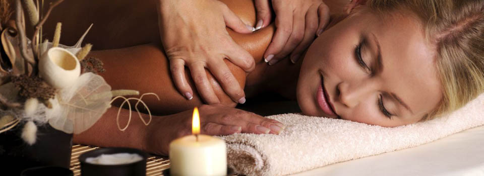

«Который день паришься, тот день не старишься» (Народная поговорка)
Древнее русское изобретение – баня с вениками исцелит уставшее тело и наполнит душу радостью! Но парение с веником без грамотного банщика – все равно что свадьба без жениха.
А как же быть, если баня построена, стоит свеженькая в Вашем дворе и благоухает свежим деревом, а среди Ваших родных и близких нет ни одного профессионального банщика? В такой ситуации Вам поможет наша услуга – домашний банщик!
Домашний банщик – территория здоровья в Вашей бане.
Вы можете пригласить к себе профессионального банщика или целую группу наших специалистов, в состав которой входит опытный массажист и банщик с доскональным знанием техники безопасности и большим опытом работы!
Мы поможем получить настоящую радость и заряд бодрости от бани и парения с вениками людям всех возрастов, от младенцев до долгожителей! При оказании банных оздоровительных услуг мы всегда руководствуемся, прежде всего, комфортом наших Заказчиков, внимательно наблюдаем за их состоянием и гарантируем полную безопасность и высокую эффективность наших процедур!
Наши массажист и банщик не только проведут парение с веником или массаж, но и поделятся своими знаниями о банных традициях, расскажут, как получить максимум пользы и удовольствия от банных мероприятий.

